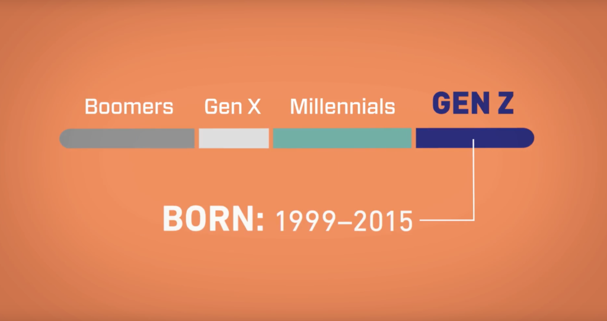

Generation Z
Gen Z entered college in ~2017 and will be going to college through ~2037, so it's important for college coaches to be thoughtful about how to coach them.
An obvious caveat before I begin: every individual is different. Generalizations about an entire generation of students will not necessarily apply in each individual case.
But the purpose of this exercise is to see if there are any worthwhile observations to be made about this generation that can help point the way towards how they ought to be coached.
And I certainly think there are some worthwhile observations to be made.
Talent Level
Let's start here: I believe in this generation. They are so talented, so worldy, so ambitious, and they have so much potential. They care a lot about making this world a better place - and so do I.
That's part of the reason I'm so excited to coach them - so that I can help them achieve their ambitions, so that we can help make the world a better place together.
One thing that makes this generation so formidable is technology - they are the first generation to grow up with Google at their fingertips. Technology and the internet has been and will continue to be this generation's superpower.
And just like any superpower, yes it offers great abilities, but those abilities are often accompanied by deficiencies in other areas.
Mental Health
It's no secret that this generation struggles with mental health, anxiety, and depression.
According to this 2019 American College Health Association report, >60% of college students say they have “felt overwhelming anxiety” sometime in the past year, and >40% of college students say they have “felt so depressed that it was difficult to function” sometime in the past year.
Even more troubling, this longitudinal study of undergraduate students found that “rates of depression, anxiety, … and suicide attempts markedly increased [from 2007 to 2018], with rates doubling over the period in many cases.”
It's difficult to point to one single cause of this trend - though genetics, traumas, social media use, co-occurring medical illnesses, and other factors could all play a role.
And there's no panacea treatment, either - common treatments range from somatic (e.g. antidepressants) to psychosocial (e.g. cognitive behavioral therapy).
Given the extent of the problem and the lack of a fix-all solution, it's a must for college coaches to consider their roles in promoting positive mental health outcomes for student-athletes.
For college coaches, it's really not a matter of "if" you will encounter players with mental health issues, it's a matter of "when". So it's important to be prepared and empathetic when you do.
Skepticism
This generation tends to be skeptical of most things - and perhaps rightly so.
They don't trust politicians, they don't trust institutions, and they might not trust you unless your arguments are very persuasive and you make a very real effort to gain their trust over time.
This is a generation that demands to know the "why" when you explain things. You can't just tell them "I want it done this way". You have to offer reasons as to why your way is best.
After all, there may be a guru on YouTube that disagrees with you. So you better be prepared to refute that YouTuber's arguments.
But arguments alone won't do the trick.
More than anything, a modern coach's top priority should be to build good relationships with their players.
The following dictum holds true for Gen Z: they won't care what you know until they know that you care.
The formula for convincing a skeptic is the same as it's always been: have empathy for their position, understand how they think and what they value, and make the case for how your teachings can help them achieve their goals.
Because of this generation, the skill of winning over a skeptic is as important as it's ever been in coaching.
Risk-Aversion
This is a generation that doesn't like taking risks.
Unlike previous generations, who grew up playing more adventourously & outdoors with their friends, Gen Z is much more used to controlled, predictable environments.
They are also the first generation to have grown up with social media, so they are often very aware of maintaining social image.
Having grown up this way certainly has it's advantages: many Gen Z-ers have developed robust social networks and high levels of maturity at a young age.
But the downside is that many of them lack the courage to take risks and the resilience to bounce back from their mistakes - sometimes so much so that they try and avoid making mistakes altogether.
As any coach knows, this is a shame, because failure can be life's greatest teacher.
So when you're coaching a Gen Z-er, understanding this is crucial: you have to create an environment where learning through failure is celebrated, encouraged, reinforced.
Great potential will be unlocked when learning through failure becomes the team's norm. That's both a scientific and a common sense reality. So that should be every coach's top priority.
Conclusion
This is a generation with an abundance of individual and collective potential. They want to make the world a better place, and, through the leverage of technology, they have no reason to believe they shouldn't be able to.
But it's not a generation without its challenges. Particularly in the area of mental health and resilience, this is a generation that comes to college wanting in certain basic qualities that previous generations took for granted.
Each generation is on its own journey through life. Gen Z has certainly had a unique journey, and their imprint on the world will only grow in significance over time.
My personal conviction is that the key to this generation's success will be for them to learn how to fail well. If students can muster the courage to dare greatly and to avoid feeling ashamed by their mistakes but instead to reflect on them and learn from them, then there's no telling how great a world this generation can help create.
Like any young generation, Gen Z has a tremendous opportunity to make our world a better place.
Like any young generation, it will make a world if difference if they are well-coached along the way.